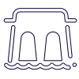
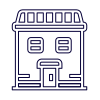
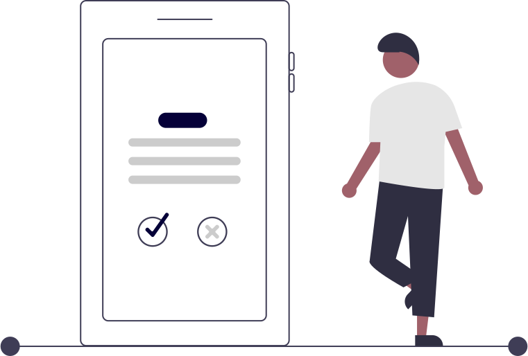

DR
Le logiciel de facility management Dédié au Génie Civil
Pourquoi adopter le logiciel DR dans vos projets de maintenance ?
Maitres d’ouvrages
Réduisez vos budgets maintenance en améliorant les flux de travail
Le logiciel permet d'améliorer l'efficacité et la collaboration des équipes qui inspectent vos facilities en standardisant les flux de travail des prestations d'inspection de vos ouvrages.
Conservez des modèles fidèles de vos constructions
DR vous permet d'améliorer le suivi des informations de maintenance des construction existantes. La solution évite les pertes d'informations ou les incohérences d'un marché à un autre.
Améliorez la collaboration projet avec vos prestataires de service
La plateforme vous permet de permet de suivre en direct les prestations des BET et AMO qui inspectent vos ouvrages.
La solution dédiée au facility management et à la maintenance des ouvrages d'art
Le logiciel CAO DR est conforme à la méthodologie IQOA (Image Qualité des Ouvrages d'Arts) et permet de faire des relevés complets des informations de maintenance des ouvrages d'art lors des Inspections Détaillées Périodiques ou des Visites Périodiques.
En savoir plusAssitance à maîtrise d'ouvrage (AMO) et Bureau d'étude technique (BET)
Améliorez la productivité et la qualité de votre service
Avec le logiciel CAO DR dédié au dessin 2D sur le terrain, vos équipes d'inspection ne perdent plus de temps à recopier leur travail au bureau.

Une meilleure collaboration entre vos équipes
DR flexibilise les flux de travail et le management des ressources projet. Ce n'est plus forcément la même équipe qui fait les inspections et la CAO sur un projet.
Maitrisez les process de votre entreprise
Le logiciel permet de paramétrer des outils de conception personalisés et partagés dans votre entreprise. Les travaux de conception assistée par ordinateur sont ainsi uniformes et standardisés.
Un argument de recrutement pour votre entreprise
Il est difficile de trouver des ingénieurs et techniciens spécialisées dans l'ingénierie de la maintenance des structures . DR est l'outil de travail préféré des professionnels du facility management. Il sera un argument de recrutement.
Votre entreprise propose des prestations de service d’inspection ?
Vous pouvez bénéficier d’un essai gratuit de la solution sur vos premiers plans 2D.
Créer un compteDécouvrez également comment DR améliore la qualité de votre service.
Nous contacterQuels ouvrages peut-on inspecter avec DR ?
Ouvrages d’art
DR convient parfaitement aux prestations d’inspections détaillées et visites périodiques d’OA.

Ouvrages maritimes et fluviaux
Digues, écluses, barrages, centrales hydrauliques, ... Utiliser DR pour créer vos relevés de désordres

Autres ouvrages
Tous les prestation et service de diagnostics de pathologies des structures peuvent être réalisées avec le logiciel
Vous souhaitez découvrir comment DR peut vous aider à améliorer la qualité de vos prestations d’inspection ?
Nous contacterFonctionnalités du logiciel CAO
Visualisez et éditez les données de vos plans 2D
Finis les plans papiers ! Toutes vos données sont centralisées dans le logiciel et vous pouvez y accéder partout sur tous les supports mobiles. Ouvrez l'application, ajoutez vos modèles 2D, et naviguez simplement dedans.
Un outil ergonomique pensé pour le terrain et facile à utiliser
Le travail de terrain fait partie du coeur de méter des ingénieurs et techniciens en génie civil dans les entreprises qui réalisent des prestations de service d'inspection. L'ergonomie de l'outil de dessin assistée par ordinateur DR a été pensée pour être utilisé dans les conditions d'inspection.
Les fonctionnalités qu'il vous faut pour les inspections de tous types d’ouvrages
La conception du logiciel de CAO a été faite par des inspecteurs d'ouvrages. Les fonctionnalités sont dédiées aux projets de maintenance des ouvrages de génie civil. La logiciel permet ainsi de faciliter la création des dessins de relevé de désordres.
